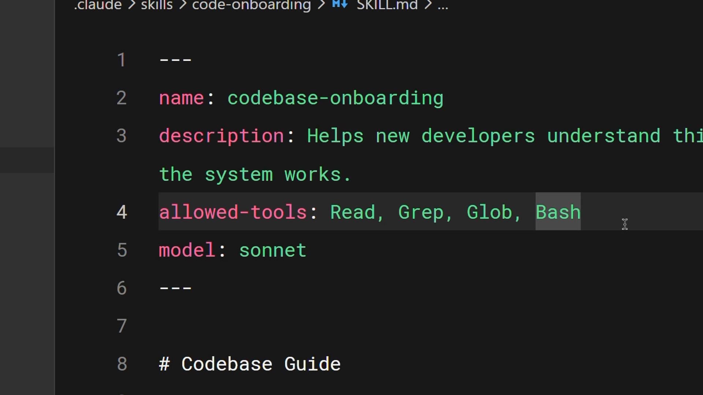
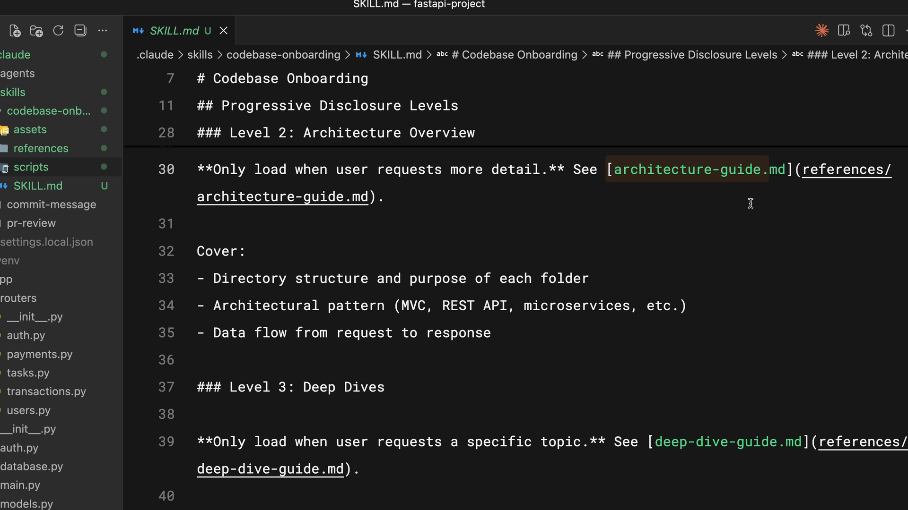

학습 내용
예상 소요 시간: 20분
이 레슨을 마치면 다음을 할 수 있습니다:
- allowed-tools 및 model을 포함한 고급 스킬 메타데이터 필드 설정
- 올바른 요청에 안정적으로 트리거되는 효과적인 스킬 설명 작성
- allowed-tools를 사용하여 스킬 활성화 시 Claude가 할 수 있는 작업 제한
- 점진적 공개 및 다중 파일 구조를 사용하여 복잡한 스킬 구성
설정 및 다중 파일 스킬
(4분)
이 동영상에서는 스킬을 더욱 강력하게 만드는 고급 기법을 다룹니다: 메타데이터 필드의 전체 세트, 안정적으로 트리거되는 설명 작성 방법, 보안에 민감한 워크플로우에서의 도구 접근 제한, 점진적 공개를 사용하여 여러 파일에 걸쳐 더 큰 스킬 구성하기. 복잡한 사용 사례를 지원하면서도 스킬을 효율적으로 유지하는 방법을 배우게 됩니다.
핵심 요점
-
name및description은 필수입니다 —allowed-tools및model은 선택 사항이지만 강력한 추가 기능입니다 - 좋은 설명은 두 가지 질문에 답합니다 : 스킬이 무엇을 하는가? Claude가 언제 사용해야 하는가?
-
allowed-tools스킬이 활성화될 때 Claude가 사용할 수 있는 도구를 제한합니다 — 읽기 전용 또는 보안에 민감한 워크플로우에 유용합니다 - 점진적 공개 : SKILL.md를 500줄 이내로 유지하고 Claude가 필요할 때만 읽는 지원 파일(references, scripts, assets)에 링크하세요
- 스크립트는 내용을 컨텍스트에 로드하지 않고 실행됩니다 — 출력만 토큰을 소비하므로 컨텍스트를 효율적으로 유지합니다
기본 스킬은 이름과 설명만으로 작동하지만, Claude Code에서 스킬을 훨씬 더 효과적으로 만들 수 있는 여러 고급 기법이 있습니다. 핵심 필드, 설명 작성 모범 사례, 도구 제한, 그리고 더 큰 스킬을 구성하는 방법을 살펴보겠습니다.
스킬 메타데이터 필드
에이전트 스킬 오픈 표준은 SKILL.md 프런트매터에서 여러 필드를 지원합니다. 두 개는 필수이고 나머지는 선택 사항입니다:
- name (필수) — 스킬을 식별합니다. 소문자, 숫자, 하이픈만 사용하세요. 최대 64자. 디렉터리 이름과 일치해야 합니다.
- description (필수) — Claude에게 스킬을 언제 사용할지 알려줍니다. 최대 1,024자. Claude가 매칭에 사용하는 가장 중요한 필드입니다.
- allowed-tools (선택) — 스킬이 활성화될 때 Claude가 사용할 수 있는 도구를 제한합니다.
- model (선택) — 스킬에 사용할 Claude 모델을 지정합니다.
효과적인 설명 작성하기
지침을 명확하게 작성하세요. 누군가 "당신의 역할은 문서를 돕는 것입니다"라고 말한다면, 무엇을 해야 할지 알 수 없을 것입니다 — Claude도 마찬가지입니다.
좋은 설명은 두 가지 질문에 답합니다:
- 스킬이 무엇을 하는가?
- Claude가 언제 사용해야 하는가?
스킬이 예상대로 트리거되지 않는다면, 실제로 요청을 표현하는 방식과 일치하는 키워드를 더 추가해 보세요. 설명은 Claude가 스킬의 관련성을 판단하는 데 사용하므로 언어 선택이 중요합니다.
allowed-tools로 도구 제한하기
때로는 파일을 수정하지 않고 읽기만 할 수 있는 스킬이 필요합니다. 이는 보안에 민감한 워크플로우, 읽기 전용 작업, 또는 가드레일이 필요한 상황에 유용합니다.

이 예에서 allowed-tools 필드는 Read, Grep, Glob, Bash로 설정되어 있습니다. 이 스킬이 활성화되면 Claude는 허가 없이 해당 도구만 사용할 수 있습니다 — 편집이나 쓰기는 불가합니다.
---
name: codebase-onboarding
description: Helps new developers understand the system works.
allowed-tools: Read, Grep, Glob, Bash
model: sonnet
---
allowed-tools를 완전히 생략하면 스킬은 아무것도 제한하지 않습니다. Claude는 일반적인 권한 모델을 사용합니다.
점진적 공개
스킬은 Claude의 컨텍스트 창을 대화와 공유합니다. Claude가 스킬을 활성화하면 해당 SKILL.md의 내용을 컨텍스트에 로드합니다. 하지만 때로는 스킬이 의존하는 참조 자료, 예제, 또는 유틸리티 스크립트가 필요합니다.
모든 것을 하나의 2,000줄 파일에 넣으면 두 가지 문제가 있습니다: 컨텍스트 창 공간을 많이 차지하고 유지 관리가 불편합니다.
점진적 공개가 이 문제를 해결합니다. 필수 지침은 SKILL.md에 유지하고 세부 참조 자료는 Claude가 필요할 때만 읽는 별도 파일에 넣으세요.
오픈 표준에서는 스킬 디렉터리를 다음과 같이 구성할 것을 제안합니다:
- scripts/ — 실행 가능한 코드
- references/ — 추가 문서
- assets/ — 이미지, 템플릿 또는 기타 데이터 파일
그런 다음 SKILL.md에서 언제 로드할지에 대한 명확한 지침과 함께 지원 파일에 링크하세요:

이 예에서 Claude는 architecture-guide.md를 시스템 설계에 대한 질문이 있을 때만 읽습니다. 컴포넌트를 어디에 추가할지 묻는 경우 해당 파일을 로드하지 않습니다. 전체 문서 대신 컨텍스트 창에 목차가 있는 것과 같습니다.
좋은 경험칙: SKILL.md를 500줄 이내로 유지하세요. 이를 초과한다면 내용을 별도의 참조 파일로 분리할지 고려해 보세요.
스크립트 효율적으로 사용하기
스킬 디렉터리의 스크립트는 내용을 컨텍스트에 로드하지 않고 실행할 수 있습니다. 스크립트가 실행되고 출력만 토큰을 소비합니다. SKILL.md에 포함할 핵심 지침은 Claude에게 스크립트를 읽으라는 것이 아니라 실행하라고 지시하는 것입니다.
이는 특히 다음에 유용합니다:
- 환경 검증
- 일관성이 필요한 데이터 변환
- 생성된 코드보다 테스트된 코드로 더 안정적인 작업
레슨 되돌아보기
- 여러 파일이 포함된 스킬을 만들고 싶다면 어떻게 할지 생각해 보세요. SKILL.md와 지원 참조 파일을 어떻게 구조화할 것인가요?
-
팀 내에서
allowed-tools로 도구 접근을 제한하면 중요한 안전 레이어가 추가될 워크플로우가 있나요?
다음 단계
다음 레슨에서는 스킬을 Claude Code를 사용자 정의하는 다른 방법들 — CLAUDE.md, 서브에이전트, 훅, MCP 서버 — 과 비교하여 각 상황에 맞는 올바른 도구를 선택할 수 있도록 합니다.
피드백
강좌를 진행하면서 업무에서 스킬을 어떻게 활용하고 있는지, 그리고 피드백이 있으시면 알려주세요. 여기서 피드백을 공유해 주세요.